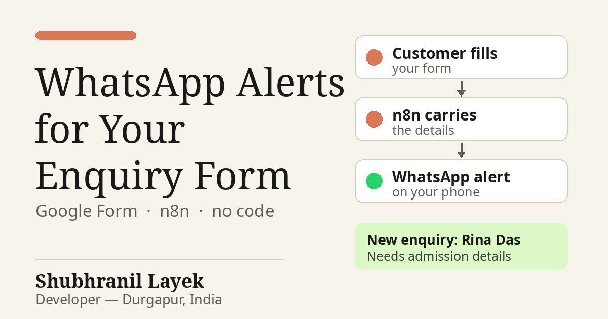
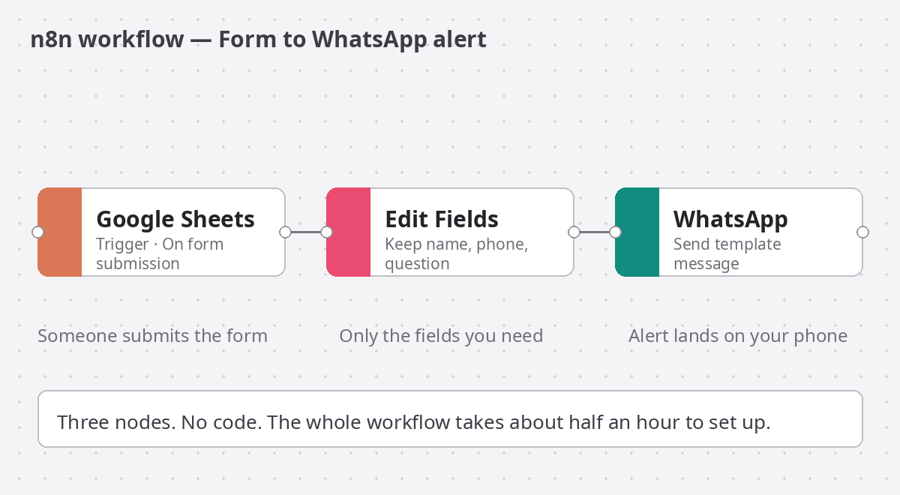
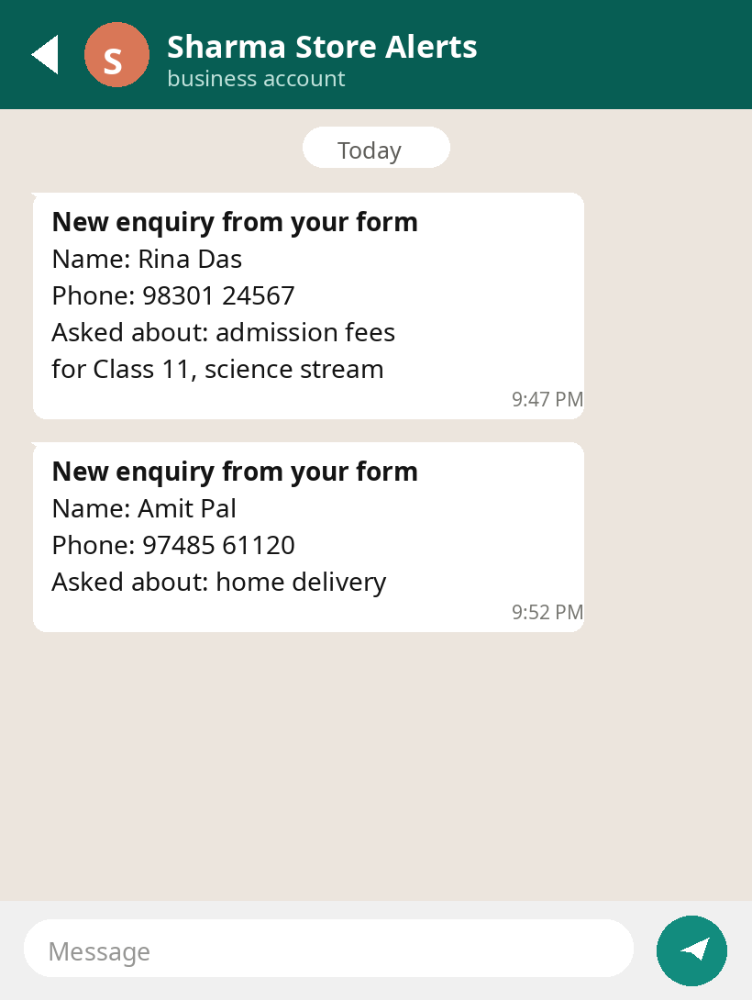

Tutorial
Get a WhatsApp Alert When Someone Fills Your Form: A Step-by-Step n8n Guide
Here is a scene every shop owner knows. Someone visits your website or your Google Form in the evening, fills in their name, phone number and a question, and waits. The enquiry quietly lands in a spreadsheet or an email inbox that nobody opens until the next day — sometimes the day after that. By then the customer has already called two other shops. The enquiry was real. It was just seen too late. This guide fixes exactly that: you will get a WhatsApp alert the moment someone fills your form, with the customer's name, phone number and question inside the message, so you can call them back while they still remember your shop. You will build it with n8n, a visual tool where you connect ready-made blocks instead of writing code. No coding is needed anywhere in this guide. If you'd rather not build it yourself, I can set it up for you — there's a note about that at the end.
The whole setup has three pieces: a Google Form that collects the enquiry, an n8n workflow that notices each new response, and WhatsApp, which delivers the alert to your phone. If you have never opened n8n before, do not worry — the basics are explained below, and my earlier guide on building a Telegram chatbot with Gemini in n8n shows the same tool from the ground up. Give yourself about 45 minutes for the first run through; most of that time goes in one-time account setup, not in the workflow itself.

Start Here: The Basics for Complete Beginners
If words like "workflow" and "trigger" are new to you, read this part first. It takes three minutes, and everything after it will make sense.
What is n8n, in one minute?
n8n is a tool for connecting apps that normally do not talk to each other. You work on a canvas, placing blocks called nodes and joining them with lines. Each node does one small job: watch a spreadsheet, tidy up some text, send a message. A row of connected nodes is a workflow, and a workflow runs by itself, day and night, once you switch it on. The first node in most workflows is a trigger — the event that starts everything, like "a new form response arrived". In this guide the trigger watches your form's responses, and the last node sends you a WhatsApp message. That is the whole idea; the rest is just filling in settings.
The three pieces, and how they fit
The form. A free Google Form with three or four fields — name, phone number, and what the customer needs. Every response is also saved into a Google Sheet, which is what n8n watches. If your enquiries come through a form on your own website instead, the same guide still works with one change, covered in the questions at the end.
n8n. The middle piece. It sits quietly until a new response appears, then picks up the name, phone number and question, and hands them to WhatsApp in the shape WhatsApp expects.
WhatsApp. The alert itself — an ordinary WhatsApp message on your own phone, from your business number, that you can read at a glance and act on: tap the number, call the customer back.
One honest thing about WhatsApp before we start
WhatsApp does not let random programs send messages from an ordinary personal number. The proper route — the one this guide uses — is Meta's official WhatsApp Business Platform (also called the Cloud API). It is free to register, and Meta gives you a test number to practise with. Two rules of this official route are worth knowing now, because they shape two of the steps below. First, when you start a conversation with a message — and an alert is exactly that — the message must follow a template that Meta approves in advance. You will write one short template in Step 2 ("New enquiry from your form: name, phone, question") and get it approved; it usually takes a few minutes. Second, skip any website or cheap tool that offers to send WhatsApp messages through unofficial gateways or your personal SIM. Those break WhatsApp's rules, and numbers caught using them get banned — I have seen a business lose the number its customers had saved for years. The official route takes twenty extra minutes to set up and never carries that risk.
What You Need
- A Google account, for the form and its response sheet — free
- An n8n account: n8n Cloud (with a free trial) or n8n installed on your own computer or a small server, where it is free
- A Meta (Facebook) account, to register on Meta for Developers — free
- Your own mobile number, the one that should receive the alerts
- About 45 minutes, most of it one-time setup
No code, no card and no server are needed to follow along and test everything. You only spend money later if you keep n8n Cloud after the trial or send a large number of alerts — the cost section near the end puts real numbers on that.
Step 1: Create the Form and Link Its Sheet
Open Google Forms and start a blank form. Give it a plain name a customer understands, like "Enquiry — Sharma Store". Add these questions:
- Your name — short answer, required.
- Phone number — short answer, required. This is the field that matters most; without it, an alert is just news you cannot act on.
- What do you need? — paragraph, required. One open box beats five clever questions; people finish short forms.
- Optionally, a multiple-choice question like "Admission / Product question / Delivery / Other" if your shop has clear categories.
Now the part people miss. At the top of the form editor, open the Responses tab and click the green Sheets icon, "Link to Sheets". Create a new spreadsheet. From now on, every submitted form adds one row to a sheet named Form Responses 1, with a timestamp and one column per question. That sheet is the thing n8n will watch — n8n has no direct line into Google Forms, and it does not need one, because the sheet receives every response the moment it is submitted.
While you are here, do one small tidy-up that pays off in Step 4: keep your question titles short and clear — "Name", "Phone number", "What do you need?" — because n8n will offer you these exact titles as field names, and short titles are easier to pick from a list without mistakes.
Step 2: Set Up WhatsApp the Official Way
This is the longest step, and it is a one-time job. Go to Meta for Developers, sign in with your Facebook account and create an app — choose the business type when asked. Inside the app, add the WhatsApp product. Meta then gives you a free test number: a business number WhatsApp provides so you can build and try things before connecting your own. On that same screen you will see two values you need in Step 4 — a temporary access token and the test number's phone number ID. Keep the tab open.
Under "Add a phone number" on that screen, add your own mobile number as a recipient and confirm the code WhatsApp sends you. The test number is allowed to message up to five such verified numbers, which is more than enough here: the only person who must receive alerts is you. (When you later connect a real business number of your own, this limit goes away.)
Now the template. In the WhatsApp section of your app, open Message templates and create one:
- Name:
new_form_enquiry— lowercase, no spaces; you will pick this exact name inside n8n later. - Category: Utility. An alert about a real enquiry is a utility message, and utility messages are the cheapest kind.
- Language: English (or the language you will actually read your alerts in).
- Body: write the alert with three blanks, called variables, where the customer's details will land:
New enquiry from your form
Name: {{1}}
Phone: {{2}}
Asked about: {{3}}Meta shows you a preview and checks the template. Approval for a plain utility template like this is normally quick — a few minutes is common. If it is rejected, the usual reason is wording that sounds like advertising; keep the text factual, like the sample above, and resubmit.
One warning about the temporary token: it expires in about a day, which is fine for today's build and test. Before you rely on the alerts daily, replace it with a permanent token — Meta's setup has a "system user" route for this, and it takes ten minutes. The mistakes section at the end explains the symptom that tells you the token has expired, so you will recognise it if it happens.
Step 3: Get n8n Ready
You have two honest choices for where n8n lives. n8n Cloud is the easy one: sign up at n8n.io, and your workflows run on n8n's servers, awake around the clock, including while your computer is off — which matters, because enquiries do not keep office hours. It starts with a free trial and moves to a paid plan after. Self-hosted n8n is the free one: the same software installed on your own computer or a small server. It costs nothing, but the alerts only flow while that machine is on and n8n is running. For a first build, start on Cloud, prove the alerts work, and decide later — moving a workflow between the two is just exporting and importing a file.
Inside n8n, create one credential before building: a Google Sheets credential. You will be sent to Google to sign in and allow access — this is how n8n gets permission to watch your form's response sheet. Use the same Google account that owns the form. The WhatsApp credential comes in the next step, while building.
Step 4: Build the Workflow — Three Nodes
Create a new workflow in n8n. You will add three nodes, left to right.
Node 1: Google Sheets Trigger
Add a Google Sheets Trigger node. Pick the Google Sheets credential you just made, then select your form's response spreadsheet and the Form Responses 1 sheet inside it. Set the trigger event to On Form Submission. That event exists precisely because the sheet is linked to a Google Form: the node wakes the moment a new response row lands. Click "Fetch test event" (or "Listen for test event") and submit your form once with your own details — n8n shows you the row it received, with your question titles as field names. This test row is what makes the next two nodes easy, because you will pick fields from it instead of typing names from memory.
Node 2: Edit Fields
Add an Edit Fields node (older versions call it Set). Its job is small but worth it: keep only the three things the alert needs, and give them short names. Add three fields — name, phone and question — and for each one, drag in the matching column from the trigger's output (the timestamp column can be dropped; WhatsApp shows the time anyway). If your form has extra questions, they simply do not get carried forward. Clean fields here mean a clean alert later, and if you ever change the form, this node is the only place that needs adjusting.
Node 3: WhatsApp — send the alert
Add a WhatsApp Business Cloud node. Create its credential with the access token and phone number ID from the Meta tab you kept open in Step 2 — the sender is the test number. Set the operation to send a template message, choose your new_form_enquiry template, and set the recipient to your own mobile number, with the country code and no plus sign or spaces (for India, like 919830124567). Then fill the template's three variables from the Edit Fields output: variable 1 gets name, variable 2 gets phone, variable 3 gets question. In n8n you do this by dragging each field into its box, which writes a small expression for you — you never type code, but if you peek, it looks like {{ $json.name }}. That is all the "programming" this entire guide contains, and n8n writes it for you.

Step 5: Switch It On and Test It Properly
Save the workflow and turn on the Active switch at the top of the canvas. This is the step people forget: while you build, n8n only runs a workflow when you press the test button; the Active switch is what makes it run on its own, for real submissions, when you are not looking at the screen.
Now test like a customer, not like the builder. Open your form in a private browser window (so you are not signed in as yourself), submit it with a friend's name or an invented one, and watch your phone. Within a few seconds to a minute, the alert should arrive from the test number, with the name, phone number and question filled in. Call the number in the alert — that tap-to-call moment is the entire point of the system, so feel how short the path is now: form, phone buzzing, call.

If nothing arrives, do not rebuild anything — go to the mistakes section below. Almost every failure is one of four small things, and n8n's Executions list (in the left menu) shows you exactly which node stopped and why.
A Worked Example: One Evening at a Coaching Centre
Let me put real clothes on this. A coaching centre in Durgapur takes admission enquiries through a Google Form linked from its website and its Google profile. The owner teaches all evening; the form's spreadsheet used to be checked the next afternoon, if the day allowed it.
On a Tuesday at 9:47 PM, just after the last class ends, a parent — let us call her Rina Das — fills the form on her phone: her name, her number, and "admission fees for Class 11, science stream". Under the old way of working, that row would have waited in the sheet until Wednesday afternoon, next to every other centre she had also enquired at. With the workflow on, the owner's phone buzzes before he has locked the classroom door. He does not call at 9:47 at night — that would be poor manners — but the alert is the first thing on his phone at 8 the next morning, and Rina gets her call before she has spoken to any other centre. Five minutes later a second alert lands, a product question from the store side of the family business. Same phone, same habit: see it now, act on it first thing.
Nothing in that story is magic. The form did not change, the customers did not change — only the gap between "someone asked" and "someone knew" shrank from a day to a few seconds.
What It Costs
Honest numbers, because "free" deserves a footnote. Testing everything in this guide costs nothing: Google Forms and Sheets are free, Meta's test number is free, and n8n Cloud has a free trial (self-hosted n8n is free for as long as you run it). When you run it for real, two possible costs appear:
| Piece | Free route | Paid route |
|---|---|---|
| n8n | Self-hosted on your own machine or server — ₹0, but the machine must stay on | n8n Cloud plan — a monthly fee, and it stays awake for you |
| WhatsApp messages | Free while testing with Meta's test number (up to 5 recipient numbers) | Per-message charge on a real business number; in India a utility template like this alert costs roughly ₹0.12 a message at the time of writing — a hundred enquiries cost about the price of a cup of tea |
| The form | Google Forms — ₹0 | — |
For a shop getting a few enquiries a day, the message cost is small enough to ignore. The real decision is only about n8n: pay a little for Cloud and forget about it, or self-host and keep a machine running.
Stuck? Common Mistakes and Fixes
Almost every failed first attempt is one of these. Find the one you are seeing.
- The workflow never runs on its own. You built it, tested it with the button, and real submissions do nothing. Fix: turn on the Active switch at the top of the canvas. Test mode and live mode are different things in n8n, and only the switch separates them.
- The trigger cannot find the form. The Google Sheets Trigger watches a sheet, not the form itself. Fix: open the form's Responses tab, link it to Sheets (Step 1), and inside the node pick that spreadsheet and its Form Responses 1 tab — not the form, and not a sheet you made by hand.
- Alerts worked yesterday, dead today. The classic. Meta's temporary access token lasts about a day, and when it expires the WhatsApp node fails with an authentication error. Fix for today: copy a fresh token from the Meta app screen into the n8n credential. Fix for good: create the permanent system-user token in Meta's business settings and put that in the credential instead.
- WhatsApp rejects the message, or the template is "not found". The template must be approved, and its name inside n8n must match the approved one exactly —
new_form_enquiry, same spelling, same language. Fix: check the template's status in the Meta dashboard first, then compare names character by character. - The alert arrives, but a field is empty. A column name changed after you edited the form, so the Edit Fields node is holding a field that no longer arrives. Fix: submit one fresh test response, open the trigger node so n8n sees the new columns, then re-pick the fields in Edit Fields from the new list.
- The message goes to the wrong number format. WhatsApp wants the full international number with no plus sign, no spaces and no leading zero — India example:
919830124567, not+91 98301 24567and not09830124567. Fix the recipient in the WhatsApp node, in that exact shape. - "It worked in the test" — but the test was you. While building, n8n listens for one test event and stops. A green test run does not mean live alerts. Fix: after activating, submit the form once more from a private window, as a stranger would, and confirm the alert arrives without you touching n8n.
- Trying to send from a personal number with a side tool. Unofficial senders get numbers banned, sometimes permanently, and a banned business number takes your customer chats with it. The official Cloud API in this guide is the whole fix — there is no shortcut version of it worth having.
Frequently Asked Questions
Is it really no code?
Yes. Every step in this guide is clicking, choosing from lists and dragging fields into boxes. n8n writes the small expressions (like {{ $json.name }}) for you when you drag a field in. If you can run a spreadsheet, you can build this.
Can the alert go to more than one person?
Yes. Add a second WhatsApp node after the first, with your partner's or staff member's number as the recipient — or copy the node and change only the number. With Meta's free test number you can have up to five verified recipients, which covers most small teams; a real business number removes that cap.
Can I reply to the customer from the alert?
The alert lands in your WhatsApp like any other chat from your business account, so you can read it instantly. To talk to the customer, tap their number in the message and call, or start a chat with them from your business number. What the alert changes is timing: you know about the enquiry within seconds, not the next day.
My enquiries come from a form on my website, not Google Forms. Does this still work?
Yes, with one swap. Replace the Google Sheets Trigger with n8n's Webhook node, and point your website form at the webhook address n8n gives you — most website form tools have a "send to webhook" or integrations setting for exactly this. The Edit Fields and WhatsApp nodes stay exactly the same, because from that point on the workflow only cares that a name, a phone number and a question arrived.
Does n8n need to be running all the time?
Something does, yes — the workflow can only fire while n8n is awake. On n8n Cloud that is handled for you. If you self-host, n8n must be running on a machine that stays on; a small home server or a cheap VPS is enough, and it is the same trade-off as keeping any alert system alive.
Is the test number safe to keep using?
For your own alerts, it works, but treat it as a practice setup: it is a shared-looking foreign number, it can only message five verified recipients, and it depends on tokens that need care. When the alerts become part of your daily business, connect your own business number in the same Meta app — the workflow does not change; only the credential's phone number ID does.
You Did It: What You Have Now
If you followed along, here is what is now quietly working for you:
- ✓ A Google Form that saves every enquiry into a sheet, with short, clear fields
- ✓ A WhatsApp Business setup the official way — test number, approved alert template, your number verified as a recipient
- ✓ An n8n workflow of three nodes: form trigger, tidy fields, WhatsApp alert
- ✓ An Active workflow that watches while you work, teach, sleep or shut the shop
- ✓ Every new enquiry on your phone within seconds — name, phone number and question, ready to call back
From here, the same pattern stretches a long way: a second alert to a staff member, a copy of each enquiry saved into a follow-up list, a gentle WhatsApp reply to the customer saying "we have your question, we will call you shortly". Each one is a node or two added to the workflow you already have.
Need an Automation Like This Built for You?
If you want this set up without spending your own evening on it, I build automations like this for small businesses — form-to-WhatsApp alerts, WhatsApp chatbots that answer customers, Telegram bots, and follow-up systems that stop enquiries from going cold. You can see my work on GitHub and in the projects section of this site, or reach me at subhralayek7@gmail.com.
I'm Shubhranil Layek, a developer based in Durgapur, West Bengal, and I'm available for freelance projects. If you have a form, a shop or a routine task that eats your time, write to me with what it should do — I'll reply with how I would build it.
For more guides, the Telegram chatbot guide shows n8n carrying messages to an AI, and the Telegram bot guide builds a bot with Python for those who do want code. Or visit Shubhranil Layek's developer website and browse the blog.